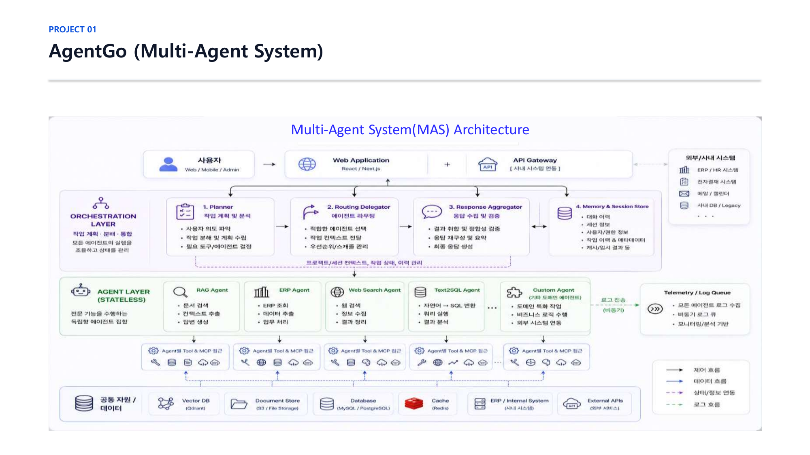
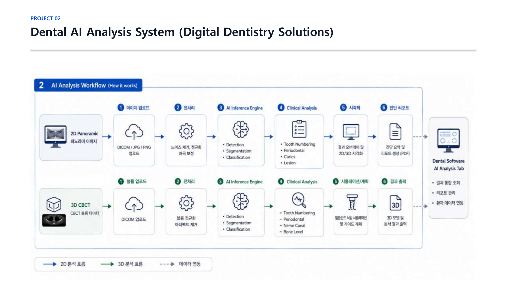
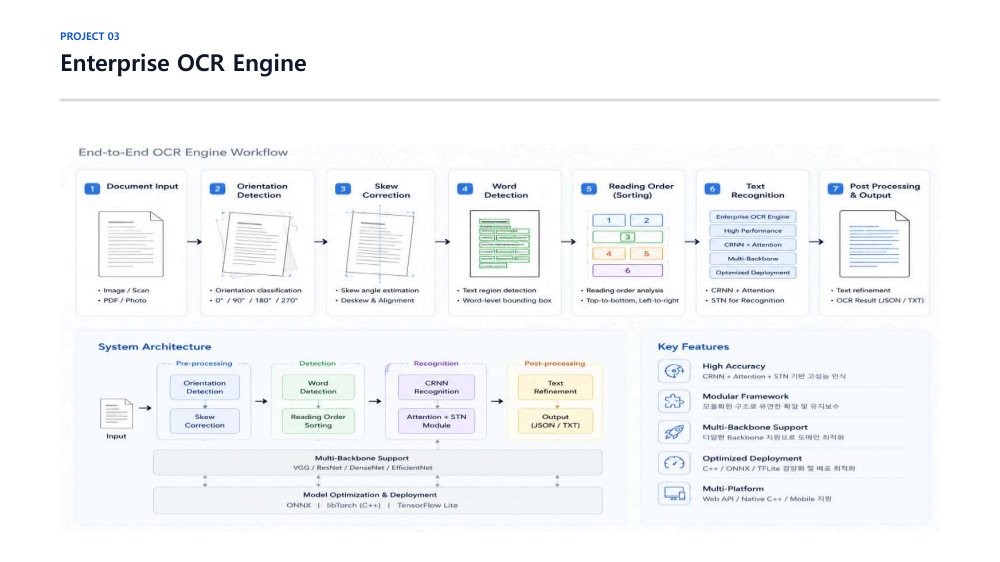
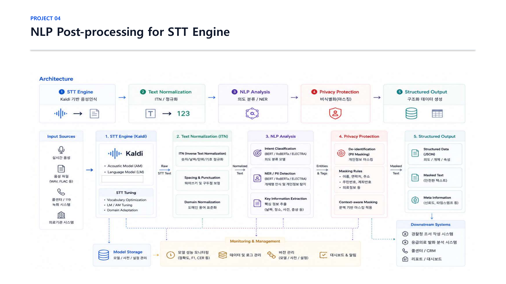

AI 모델의 연구 및 설계부터 대규모 데이터 처리, ONNX/TFLite 최적화, 그리고 Kubernetes 기반 멀티 에이전트 시스템(MAS) 구축까지 End-to-End 제품화를 선도합니다.
아이티센글로벌 수석연구원
연구부터 프로덕션 배포까지, 다년간 축적해 온 핵심 기술 스택입니다.
주요 기업에서 진행한 AI 연구 개발 및 리드 경력의 타임라인입니다.
FastAPI 기반 Planner-Orchestrator-Agent 멀티 에이전트 구조 아키텍처 전환 총괄
법무 문서의 조항 누락 및 법률 리스크 선제 필터링 RAG 시스템 구축
파노라마 이미지를 활용한 자동 치과 진단 및 시각화 리포팅 솔루션
임플란트 수술 계획 및 정렬 분석을 위한 3D 영상 R&D
딥러닝 기반 문자 탐지/인식 모델 및 경량화 서빙 모듈
텍스트 실시간 가공 및 민감 정보 마스킹 언어 모델 구축
대용량 비정형 한글 문서(HWP, PDF) 수집 및 인덱싱 검색 엔진 R&D
성공적으로 완수하여 실제 제품 및 서비스에 탑재된 프로젝트 목록입니다.

사내 AX(AI Transformation) 표준 멀티 에이전트 플랫폼 전환 프로젝트. Planner-Orchestrator-Agent 구조로 지식 프로세스 자동화 및 에이전트 오케스트레이션 총괄.

2D 파노라마 치과 영상 및 3D CBCT 의료 영상을 AI 모델로 자동 분석하여 치식(Tooth Numbering) 기준 진단 리포트를 생성하고 임플란트 모의 수술을 지원하는 통합 솔루션.

기존 상용 엔진 대체를 위해 개발된 고정밀/경량화 자체 OCR 솔루션. 문서의 회전각 보정, 영역 탐지(Detection) 및 문자 인식(Recognition) 모듈 설계.

음성인식(STT) 엔진 결과를 받아 실시간으로 텍스트를 후처리(정규화, 역텍스트 정규화, 띄어쓰기 보정)하고 KoELECTRA 기반 NER 모델로 민감한 개인정보를 탐지 및 마스킹하는 시스템.
Handoff 형태의 비정형 문서(HWP, PDF 등)를 파싱하고 MeCab 한글 형태소 분석기 및 Word2Vec 임베딩을 커스텀 연동하여 색인 및 추천 검색 엔진 구축.
시력 취약계층의 버스 탑승 및 보행을 보조하기 위해 버스 번호판(Inception 전이학습) 및 보행 신호등(YOLO)을 실시간 객체 탐지하여 음성 가이드해주는 안드로이드 시스템.
건설 현장 등에서 촬영된 이미지 내 보드판 영역을 검출(U-Net)하고 영역 왜곡을 HOG 알고리즘으로 자동 보정하여 필기체를 인식(VGGNet)하는 가공 엔진.
건강검진 데이터 및 개인 생활 습관 요인을 특징 공간 설계(Feature Engineering)하여 연령대별 다중 질병 발생 위험도를 예측하는 예방 의학 알고리즘.
학계 게재 연구 논문 및 공식 수상, 전문 자격 증명입니다.
임플란트 식립 시뮬레이션을 더욱 신속하게 실시간 예측할 수 있도록 Parametric ROM(Reduced Order Model) 분석을 연계한 디지털 트윈 기반 설계 및 구조 시뮬레이션 연구.
3D Dental 보철물 설계 지원 목적의 생성적 적대 신경망(GAN) 기반 가상 치아 구강 이미지 합성 및 기하적 특징 공간 매핑 연구.